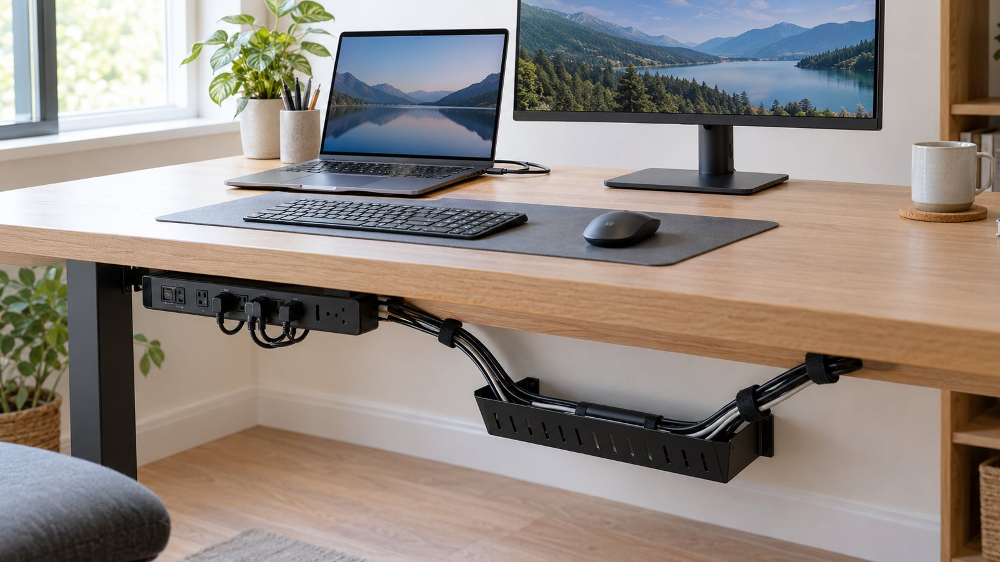
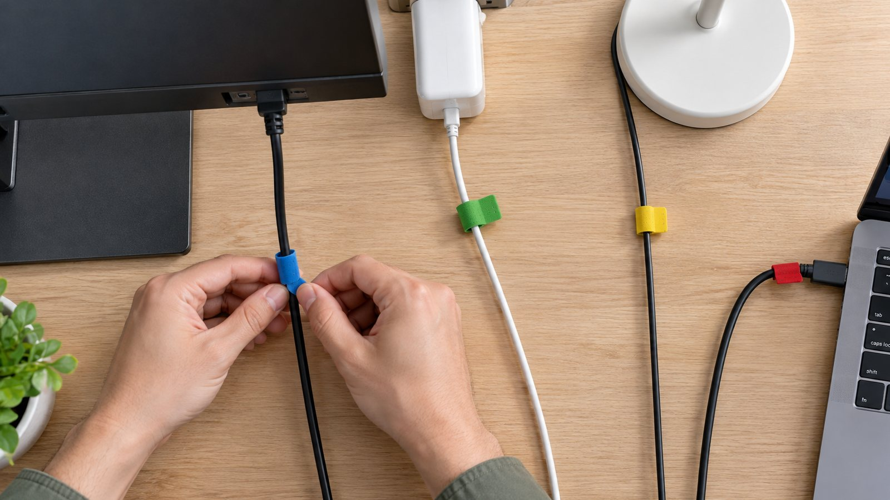
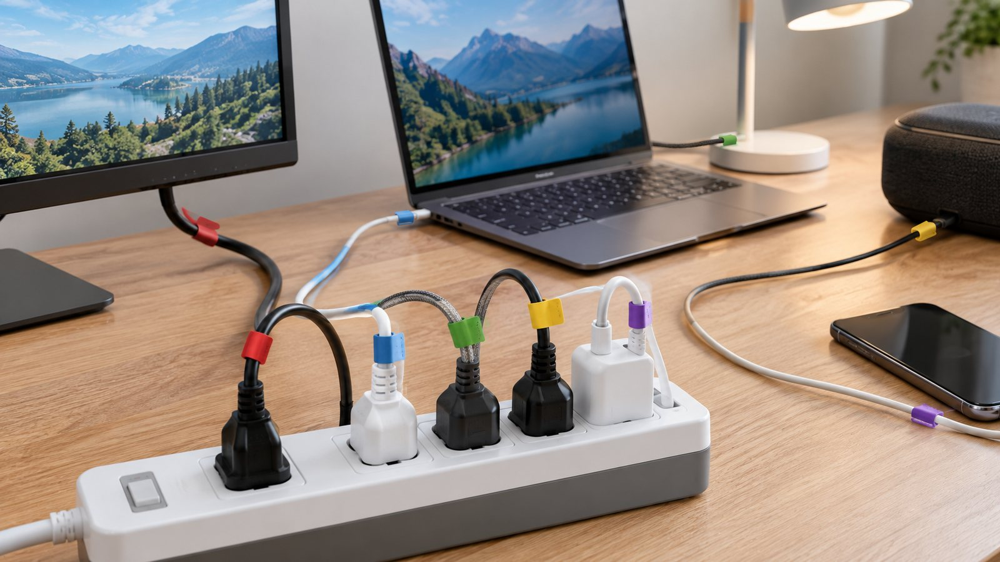
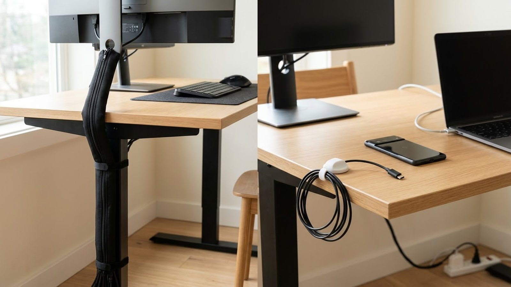
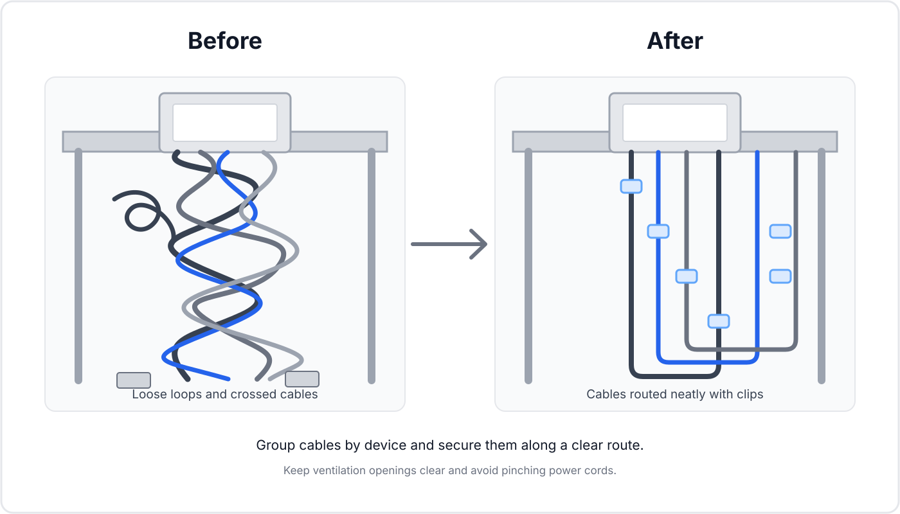

STORAGE & ORGANIZATION · CABLES
Reduce Cable Clutter: A Simple System That Stays Serviceable
A tidy cable setup should still be easy to unplug and change. Remove cables that do nothing, shorten the routes that remain and keep what changes often within reach. You do not need to hide every wire in a box.

Start by mapping what each cable does

Do not tie anything together yet. Trace one cable at a time from the device to the power source or other connection, and note whether it carries power, display, network, charging or an accessory. If you cannot say what a cable connects, do not hide it: unknown wires are what cause trouble later. Photograph a complicated setup first (a handwritten note is enough for a small desk) so you can restore a connection if one gets mixed up.

Remove cables that no longer connect anything
Disconnected cables cause most of the visual noise. Unplug one candidate at a time and confirm that nothing stops working. Recycle obsolete cables through local electronic-waste services instead of keeping a box of unknown wires. Keep a small labeled reserve only for cables you expect to need: one spare USB cable is useful, four unidentified charging cables are not a system.
Separate permanent cables from temporary ones
Think of the setup as two layers. The hidden layer carries stable connections and can run behind furniture or through a cable tray. The accessible layer holds charging cables and other things that change often, and stays within reach. Mixing the two makes a bundle that looks neat until you need to move one device.

Shorten and route the visible run
Long visible runs usually mean the power strip is in the wrong place. Where it is safe and practical, move the power source closer to the equipment, then route each cable along the shortest useful path. Group cables by destination (display on one route, power on another, charging leads separate) so you can follow one path without dismantling the rest. Hold the routes against the rear edge of the desk or cabinet with reusable clips or hook-and-loop ties, keep bends gentle, and leave enough slack for a monitor to tilt or a laptop to move.
Safety first. Do not put power strips or power adapters where they can be kicked, pinched, exposed to moisture or covered by fabric or other objects that trap heat. Keep cables out from under rugs and away from door hinges. If a cable shows damage, unusual heat or exposed conductors, stop using it and replace it. Never modify plugs or damaged electrical equipment, and follow the manufacturer's instructions and local electrical requirements.
Keep connectors accessible and label what matters
You should be able to replace one part without moving everything. Leave service points within reach, avoid gluing connectors that may need unplugging, and leave a small loop near devices that move. Secure bundles loosely at a few points rather than making one rigid rope. Label only the connections that would cause confusion during a reset or move: power adapters, network connections and similar-looking cables. Short labels such as “monitor,” “router” or “speaker,” placed close to the connector, are enough.
Make one charging zone
If chargers appear in several rooms, pick one or two charging points for the devices you use most. A tray or shelf keeps adapters together while leaving the cables reachable. Give each charger its own route, so a cable used every day does not need untangling from three others.
Test the setup before hiding anything
Test every device: power, display, network and charging. Move adjustable equipment through its normal range and check that nothing pulls tight. It is much easier to move one clip now than to rebuild the route later.
A 20-minute cable reset
- Photograph the current setup.
- Trace important cables.
- Remove disconnected or obsolete cables.
- Move the power source closer where safe and practical.
- Separate permanent and temporary connections.
- Route each group along a short path.
- Secure the route loosely with reusable clips or ties.
- Label only the connections that need identification.
- Test every device.
Common mistakes
- Throwing unknown cables into a box without labeling them.
- Creating one giant bundle that cannot be serviced.
- Using permanent adhesive where equipment needs to move.
- Running cables where feet, chairs or doors can catch them.
- Buying organizers before removing cables that are no longer needed.
Know when a cable organizer is actually useful
Organizers help when they solve a specific routing problem, such as holding cables under a desk or stopping a charger from falling behind furniture. They do not help when they only hide cables you have not identified. Buy the smallest tool that solves the problem: reusable clips, hook-and-loop ties and a modest tray are often enough.
What to measure and buy before you start
Cable fixes are cheap, but the wrong clip size is the main reason they fail. Take these notes before you buy anything.
| Check | What to note |
|---|---|
| Devices and sockets | Count what must be plugged in today and add one or two spare sockets. Too few outlets is how daisy-chained extensions start. |
| Power rating | Add up the power of the devices sharing one strip. Many US strips are rated for 15 A (about 1800 W) and many UK extension leads for 13 A (about 3000 W). Check the label and never plug one strip into another. |
| Cable length | Measure each device-to-socket distance along the real route, plus a small loop at each end. Excess length belongs in a loose loop, not a tight coil. |
| Cable thickness | Clips and channels list the widths they hold. Measure your thickest cable: a clip that is too small squeezes it, one that is too big lets it fall out. |
| Surfaces | Adhesive needs a clean, dry surface. Rough paint, textured wallpaper and dusty wood make clips peel, so use screw-in clips there. |
| Ties | Hook-and-loop straps let you change the setup later; tight plastic ties can damage cables and are hard to undo. |

Frequently Asked Questions
Should I hide every cable?
No. Hide or route permanent runs while keeping frequently changed cables accessible.
What is the easiest way to reduce cable clutter?
Remove disconnected cables first, then move the power source closer and route the remaining cables along a short predictable path.
Are cable ties safe to use?
Reusable ties are useful when they hold cables without crushing them or creating sharp bends.
How do I keep cables easy to identify?
Label important connections and separate permanent cables from temporary charging or accessory cables.
How can I manage cables under a desk?
Bring the power strip close to the equipment, route cables under the rear edge and leave enough slack to move or replace individual connections.
Should I hide every cable?
No. Hide or route cables that are permanent and visually disruptive, but keep frequently changed connections accessible. A cable system should be tidy without making routine maintenance difficult.
For related smart-home organization, read smart lighting without turning your home into a gadget showroom, motion lighting that actually helps, and how to make a room feel calmer without buying everything new.